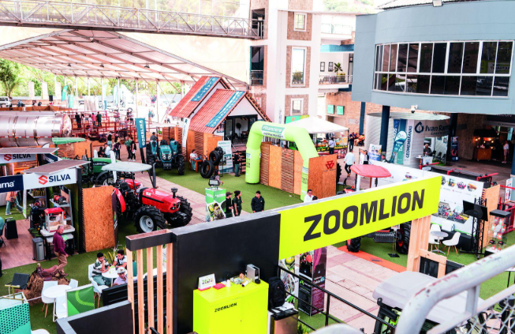
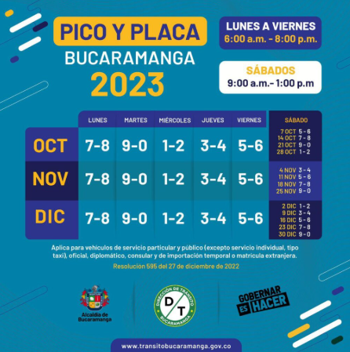

Economía · Agro
Agroferia 2026: el evento agrícola más importante del oriente colombiano llega a Bucaramanga
Del 22 al 25 de abril, el Centro de Ferias, Exposiciones y Convenciones de Bucaramanga (CENFER) alberga la Agroferia 2026, el evento agrícola y pecuario más importante del oriente colombiano. La Gobernación de Santander participa con su oferta institucional destacando el sector cacaotero, la ganadería y los productos del campo santandereano. Se esperan más de 15.000 visitantes y la generación de miles de empleos en la región.
22 abr. 2026 · Bucaramanga Alerta / Gobernación de Santander
